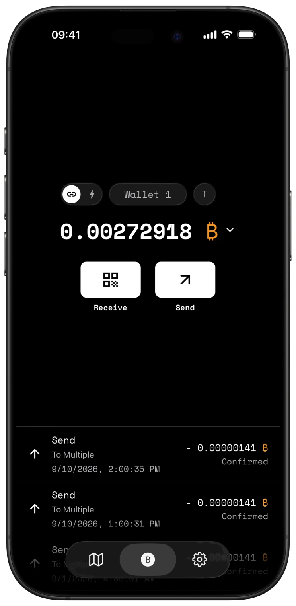
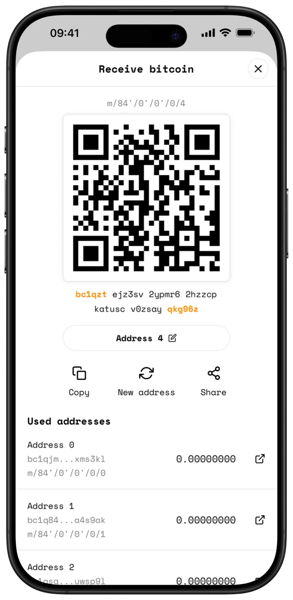
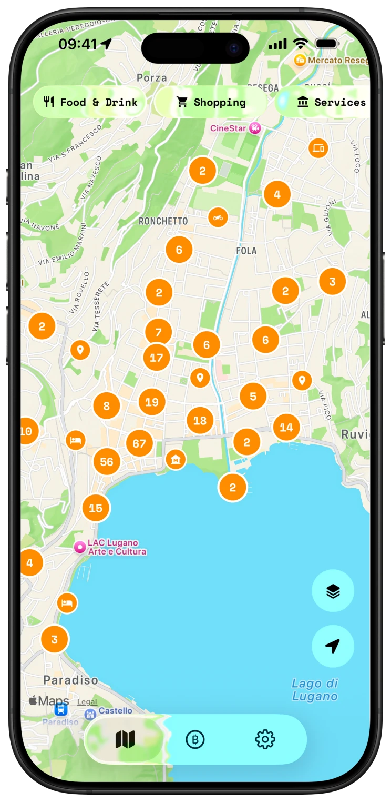
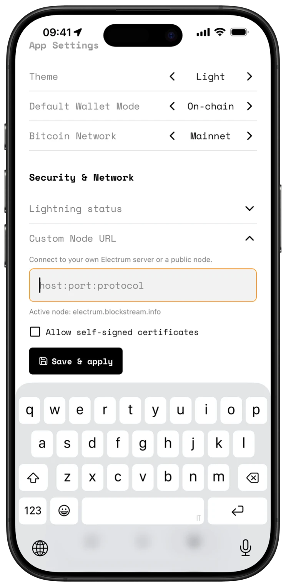

Open-source Bitcoin wallet
Bitcoin in
your hands.
Hold your own keys. Pay a friend over Lightning, find a shop that takes bitcoin, or choose exactly which coins to spend.


Which payment method should I use?
| At a glance | On-chain | Lightning |
|---|---|---|
| What the recipient shares | A Bitcoin address | A Lightning invoice |
| Which balance pays | Your on-chain coins. You can choose the inputs and the fee rate. | Your Lightning balance. Check the invoice amount before approving. |
| How to check the result | Track the transaction and its block confirmations in History. | Check the payment status in the wallet. A cashier can verify the same invoice on Terminal. |


Pay in person
Find a shop.
Pay in sats.
Open the map and filter for food, shopping or services. At the counter, ask for a Lightning invoice, scan it from your wallet and check the amount before approving.
How Lightning payments workKnow what you spend.

Keep your coins separate
A payment from a friend and a withdrawal from an exchange can sit in the same wallet. Coin control lets you choose which outputs fund a payment and see which ones stay untouched.
Give each sender a fresh address
Share a new QR code for your next on-chain payment. All of your receive addresses belong to the same wallet, so you can track them together without handing every sender the same address.

Use the node you run
Already run an Electrum server? Connect it in Settings so your wallet checks on-chain balances and history through your own infrastructure.
Spend from a wallet whose keys stay offline
Prepare on your phone
Import the supported extended public key as a watch-only wallet. To send bitcoin to a friend, enter their Bitcoin address and the amount. Export the unsigned transaction as a PSBT.
Sign offline
Open the PSBT on your compatible offline signer. Check the recipient, amount and fee on its screen, then sign with the keys held there.
Broadcast from Trustless
Tap Import signed transaction and scan the QR on your signing device. Review the transaction in Trustless, authorize the broadcast and follow its confirmations in History.
Common questions
Before you
get started.
A few choices matter from day one, especially how you back up and where you keep each balance.
Browse all guidesHow do I recover my wallet if I lose my phone?
Keep a private offline copy of your recovery phrase and verify it in the app. The phrase protects access to your keys. If you use Terminal, export its encrypted backup separately to preserve local business records. Read the backup guide.
Why are there two balances?
Your on-chain balance is held in Bitcoin outputs. Your Lightning balance uses the Breez SDK with Spark for everyday invoice payments. Moving between the balances is a separate operation. Normal Lightning payments and withdrawals depend on service availability. Compare the payment methods.
Can I track a wallet that I sign for elsewhere?
Import the wallet’s supported public key for watch-only access. You can monitor the balance and prepare a partially signed Bitcoin transaction, then use your offline signer and bring the signed transaction back to Trustless to broadcast. Read about watch-only signing.